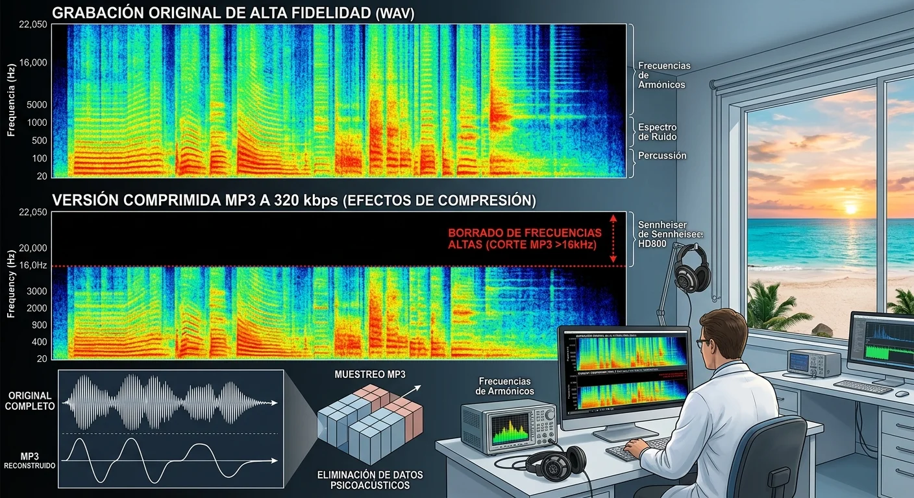

Te has acostado noche tras noche, colocándote piadosamente tus auriculares con la ilusión intacta. Has buscado incansablemente por qué los audios de youtube para insomnio no funcionan tras acumular semanas intentando conciliar el sueño o manifestar una solución a tus deudas sin ver el más mínimo cambio. Miras el contador de reproducciones de esos videos en YouTube: tres millones de vistas, miles de comentarios prometiendo milagros, títulos rimbombantes sobre el secreto nikola tesla 3 6 9 manifestacion ... pero en tu vida real, la cuenta bancaria sigue en cero, la mente continúa girando a mil revoluciones por minuto a las 3:00 AM y la frustración amenaza con ahogarte.
¿Es la Ley de Atracción una mentira? ¿Acaso tu cerebro es inmune a la reprogramación subconsciente? La respuesta contundente es NO . Tu mente no está rota, ni tampoco estás "energéticamente bloqueado" por una maldición del destino. La cruda realidad es que has sido víctima de una ilusión técnica masiva. Has estado alimentando a tu sistema nervioso central con el equivalente acústico a la comida chatarra inflada con aire, esperando obtener la nutrición celular de un banquete de alta cocina.
Existe un engaño silencioso detrás de la distribución digital gratuita. Un secreto de ingeniería de sonido y compresión de datos que los grandes creadores de contenido en YouTube no te cuentan (o que simplemente ignoran por completo). En este análisis de revelación técnica, desnudaremos las razones físicas y matemáticas por las cuales reproducir frecuencias 369 o un audio binaural para desbloquear abundancia desde plataformas como YouTube, Spotify o TikTok es una pérdida absoluta de tiempo y cómo la verdadera neuroacústica funciona cuando se respeta la física de ondas.
La ilusión del MP3: El genocidio de frecuencias que destruye el código 3-6-9
Para entender el fallo catastrófico del audio gratuito en línea, debemos remontarnos a la ciencia detrás de la arquitectura cerebral. Tu cerebro opera mediante impulsos electromagnéticos que se miden en Hertz (Hz). Cuando intentas aprender cómo manifestar dinero rápido con frecuencia 369 , buscas inducir en tu masa encefálica un estado de arrastre de ondas cerebrales (Brainwave Entrainment). Se requiere que ambos hemisferios sincronicen sus micro-impulsos en bandas Alfa (8-12 Hz) o Theta (4-7 Hz) para sobrepasar la barrera crítica del consciente y reescribir los patrones limitantes guardados en el subconsciente.
Este proceso biológico exige una precisión quirúrgica. Un desfase de fase exacto entre el oído izquierdo y el oído derecho. Sin embargo, cuando un creador sube una pista binaural a YouTube, ocurre un desastre técnico invisible:
⚠️ ALERTA DE COMPRESIÓN DESTRUCTIVA (OPUS / AAC / MP3)
Para ahorrar petabytes de espacio en servidor y ancho de banda en redes móviles, YouTube aplica un algoritmo de compresión psicoacústica agresivo. Este software elimina arbitrariamente el 70% al 85% de las frecuencias "no perceptibles por el oído humano promedio". En ese recorte implacable, el algoritmo mutila las microfrecuencias portadoras, destruye la fase estéreo pura y decapita los armónicos superiores e inferiores donde reside el verdadero estímulo binaural.
Lo que llega a tus oídos a través de un video comprimido a 128 kbps o menos no es una frecuencia sanadora ni la resonancia cuántica de Tesla. Es un archivo de audio mutilado, aplanado y lleno de artefactos digitales microscópicos. Tu cerebro, lejos de relajarse o entrar en coherencia de fase, percibe estas imperfecciones de compresión como un "ruido caótico", desencadenando una respuesta sutil de micro-estrés en el sistema nervioso. En lugar de abrir la puerta a la abundancia, estás activando el cortisol.
La física de Nikola Tesla vs. El algoritmo de compresión digital
Nikola Tesla no concibió las matemáticas del 3, 6 y 9 como simples números esotéricos dibujados en un papel. Para el genio de la electricidad, estos dígitos representaban vórtices de transferencia de energía pura sin resistencia. La verdadera resonancia 3-6-9 aplicada a la acústica requiere mantener una relación armónica matemática ininterrumpida a lo largo de toda la longitud de onda.
Cuando escuchas una simulación de 432 Hz, 528 Hz o 369 Hz en un reproductor comprimido, la onda senoidal pura se deforma. En lugar de una curva suave y fluida capaz de alterar la tasa de disparo neuronal, la compresión digital transforma la onda en una serie de "escalones" cuadrados y defectuosos. Es la diferencia entre deslizar la mano sobre seda fina o rasparla contra una lija industrial.
Por esta razón exacta, los decretos hablados sobrepuestos en audios de YouTube suelen rebotar contra la mente consciente. Al no lograr el estado Theta profundo debido a la mala calidad del audio, tu mente analítica permanece en Beta alta (alerta, escepticismo, estrés laboral), repitiendo por dentro: "Esto no funciona, sigo teniendo deudas, mañana tengo que pagar la renta" .
¿Por qué conformarte con audio comprimido que bloquea tus resultados?
Descubre la diferencia abismal de experimentar el espectro completo sin pérdida en formato WAV Máster de 24 bits. Permite que tu mente entre en sincronización hemisférica real en cuestión de minutos. Querrás conocer más sobre QuantumAudio® y la ciencia de la estimulación pasiva pura.
Conocer más sobre QuantumAudio®La mentira del "Efecto Placebo" y la falta de calibración estereofónica
Existe otro problema técnico crítico en los contenidos masivos de internet: la falta de calibración de fase. Para que un audio binaural para desbloquear abundancia surta efecto biológico, el tono del canal izquierdo y el tono del canal derecho deben mantener un desfase constante y sin variaciones de latencia.
La inmensa mayoría de los videos en plataformas gratuitas son producidos por aficionados utilizando plugins gratuitos de edición de audio. Al exportar el archivo final y atravesar los servidores de renderizado masivo, se introducen pequeñas fluctuaciones de milisegundos en la fase estéreo. Este error de renderizado destruye el "tono binaural fantasma" que el cerebro debe crear dentro del tronco encefálico. En términos sencillos: la magia matemática desaparece por completo.
Quienes afirman haber tenido "resultados" con estos audios comprimidos generalmente han experimentado un leve efecto placebo temporal o una relajación superficial inducida por la música ambiental, pero jamás una reprogramación profunda del patrón de escasez o un tratamiento efectivo contra la rumiación mental nocturna.
Análisis técnico comparativo: Audio MP3 de YouTube vs. Pista Máster WAV 24-bit
Para visualizar con claridad matemática por qué tus esfuerzos anteriores han sido en vano, analiza la siguiente tabla de especificaciones técnicas entre el contenido masivo de red y la arquitectura de grado profesional:
| Parámetro Técnico | Audio Masivo (YouTube / MP3 / Spotify) | QuantumAudio® (WAV Máster 24-bit Puro) |
|---|---|---|
| Tasa de Muestreo (Bitrate) | 128 kbps - 160 kbps (Compresión Destructiva) | 1411 kbps a 2304 kbps (Estudio de Alta Fidelidad) |
| Integridad de Onda | Decapitada por filtros psicoacústicos | 100% Intacta , preservando armónicos clave |
| Precisión de Fase Estéreo | Inestable / Alterada por codificación masiva | Alineación Quirúrgica de tono binaural |
| Respuesta del Sistema Nervioso | Resistencia pasiva / Micro-estrés neuronal | Arrastre Hemisférico Inmediato (Alfa/Theta) |
| Exigencia al Usuario | Requiere concentración o meditación activa | 100% Pasivo: Funciona incluso durmiendo |
Un caso real: De la frustración por insomnio y escasez a la claridad absoluta
La historia de miles de personas que descubren la verdad técnica detrás del audio digital suele seguir el mismo patrón desgastante. Considera la experiencia documentada de una usuaria que atravesó este mismo dilema:
"Llevaba casi ocho meses escuchando listas de reproducción en YouTube tituladas 'Frecuencia 369 para Atraer Dinero Inesperado' y 'Solfeggio 528Hz para Dormir Profundo'. Al principio quería creer que funcionaba, pero la verdad es que me despertaba a las 3 de la mañana con el corazón latiendo a mil por hora, angustiada por mis tarjetas de crédito. Pensaba que la ley de atracción no era para mí o que mi cerebro tenía un problema irreversible. Cuando leí sobre la destrucción de armónicos por la compresión MP3, todo me hizo sentido. Probar una pista nativa sin comprimir en calidad WAV de alta definición fue un cambio de la noche a la mañana. En la primera escucha sentí cómo mi mente se 'apó' literalmente en 10 minutos. A las dos semanas, la claridad mental que recuperé me permitió cerrar un negocio de consultoría que llevaba meses estancado. La técnica lo es todo."
— Elena R., Diseñadora y Consultora Independiente
La solución pasiva: Cómo reprogramar tu subconsciente sin esfuerzo
El ritmo de vida moderno no perdona. Trabajo agotador, cuentas por pagar, estrés acumulado y la constante presión social dejan cero espacio para pasar dos horas al día intentando silenciar la mente mediante técnicas arcaicas de meditación. La belleza de la ingeniería neuroacústica avanzada radica en que elimina por completo la fuerza de voluntad de la ecuación.
No necesitas poner la mente en blanco. No necesitas recitar afirmaciones hasta quedar afónico. Tampoco necesitas adoptar posturas incómodas. Cuando entregas a tus oídos una señal sonórica pura, sin pérdidas ni compresión, la física toma el control:
- Acoplamiento Auditivo: Te colocas tus auriculares antes de dormir o durante un descanso en tu día.
- Inducción Automática: La frecuencia purificada penetra directamente en el córtex auditivo, forzando al cerebro a replicar la frecuencia del pulso binaural (Resonancia 3-6-9 de Tesla).
- Desactivación del Ruido Mental: En menos de 15 minutos, la amígdala cerebral reduce su hiperactividad, silenciando la rumiación de deudas, ansiedad o insomnio.
- Apertura Subconsciente: La mente entra en una ventana de alta plasticidad donde los nuevos patrones de abundancia y calma se asimilan de forma pasiva.
Deja de desperdiciar tu energía en audios deformados
Si estás listo para dejar atrás la prueba y error, es momento de experimentar la verdadera ingeniería sonora de alta definición que tu cerebro merece. Te invitamos a conocer más sobre QuantumAudio® y descubrir cómo el audio máster de 24 bits puede transformar tu realidad desde la primera escucha.
Conocer más sobre QuantumAudio®Preguntas Frecuentes sobre las Frecuencias y la Calidad de Audio
El camino hacia una vibración sin interferencias
Continuar reproduciendo listas de videos aleatorios en YouTube esperando que un archivo MP3 comprimido resuelva años de bloqueos financieros o insomnio severo es seguir dando vueltas en el mismo círculo de frustración. La ciencia acústica es rigurosa: o le entregas a tu cerebro la longitud de onda exacta que necesita para entrar en coherencia, o la señal simplemente se pierde en el ruido digital.
El código 3-6-9 que apasionó a Nikola Tesla no era un mito místico, sino la clave matemática de la energía en estado puro. Hoy tienes en tus manos la información técnica para tomar una decisión consciente: seguir alimentando a tu mente con transmisiones de baja calidad o dar el salto hacia una experiencia neuroacústica profesional en alta definición pasiva que desate tu verdadero potencial de manifestación y descanso.